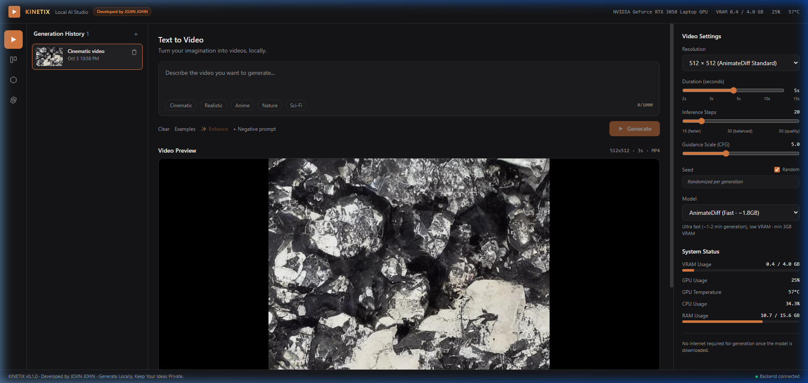
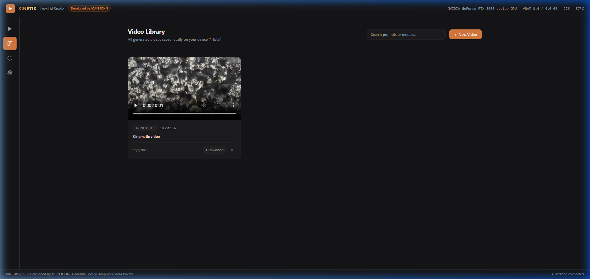
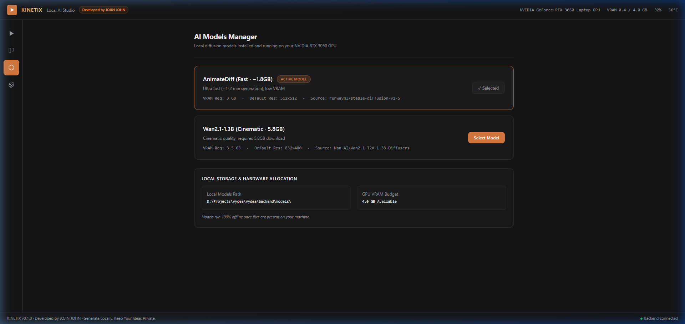

Kinetix is an autonomous local text-to-video AI studio powered by AnimateDiff and Stable Diffusion. Zero subscriptions, zero cloud tokens, 100% privacy on consumer hardware.
A dark, distraction-free glassmorphic studio interface built with Next.js 14 and FastAPI.

Prompt bar with cinematic style tags, negative prompt support, randomized seed lock, step slider, and live GPU/VRAM hardware telemetry.

Browse all past generations, preview animated thumbnails, check resolution badges, and play clips with zero latency.

Inspect active diffusion pipelines, verify disk footprint, monitor VRAM thresholds, and manage cached weights.
Explore 10 animated video demos running on local hardware across cinematic, action, nature, sci-fi, and realism styles.
"Cinematic mineral macro video with raw gold veins and crystalline facets, hyper-detailed studio lighting"
"An astronaut exploring a mysterious red extraterrestrial planet surface, volumetric atmospheric lighting, cinematic 8k movie still"
"Cyberpunk character walking in rain-slicked city streets with vibrant neon reflections, motion blur, dramatic amber and cyan lighting"
"Vibrant fireworks bursting over a metropolitan skyline at night, reflections shimmering across river water, 4k cinematic"
"Cinematic sunset over ocean waves, golden hour reflections, foaming surf crashing on shore, photorealistic 8k"
"Epic high altitude mountain range with rolling cloud mist, cinematic golden sun flare, photorealistic national geographic 8k"
"Cinematic nature time-lapse, glowing cherry blossom petals gently floating in spring mountain breeze, golden hour sunlight"
"A happy golden labrador puppy playing in lush sunny garden, dappled sunlight, highres RAW photo, global illumination"
"Close-up macro photo of a wild rabbit in misty emerald forest, halation bloom, dramatic atmospheric lighting, 200mm f/1.4"
"Anime heroine dynamic action animation, expressive eyes, wind in hair, high production anime movie sequence"
How Kinetix runs full 3D temporal video diffusion without overflowing consumer GPU memory.
Decodes video latents one frame at a time (decode_chunk_size=1) instead of batching all 16 frames simultaneously, dropping memory usage from ~1,200MB down to ~80MB.
Dynamically stages neural weights between 16GB system RAM and 4GB GPU VRAM during pipeline execution, keeping active tensors safely within limits.
Enables spatial tiling for the AutoencoderKL decoder, partitioning high-dimensional convolution operations into micro-tiles to eliminate memory spikes.
Dedicated Python script leveraging 16 parallel connections to download the full ~3.7GB model weights from Hugging Face in ~10–12 minutes.
Why running AI models on your own GPU is the superior choice for developers and creators.
| Feature / Metric | ⚡ Kinetix (Local Studio) | Commercial Cloud Video APIs |
|---|---|---|
| Monthly Subscription | ✓ $0 (Free Forever) | ✕ $20 - $60 / month |
| Data Privacy | ✓ 100% On-Device (0 Cloud Calls) | ✕ Prompts sent to third-party servers |
| Generation Limit | ✓ Unlimited Videos | ✕ Metered credits & tokens |
| Offline Capability | ✓ Works completely without Internet | ✕ Requires active internet connection |
| Hardware Optimization | ✓ Runs on consumer 4GB VRAM GPUs | Runs on expensive server clusters |
| Licensing & Source | ✓ 100% Open-Source (MIT) | ✕ Proprietary black-box |
Clone the repository and run the 1-click launcher on Windows, or start via CLI.
Software Engineer & AI Enthusiast passionate about democratizing generative AI on consumer hardware.